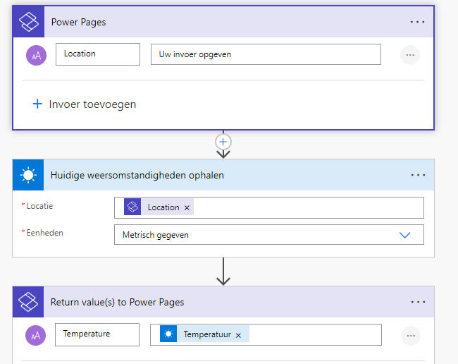

Calling a Power Automate Cloud flow, from Power Pages forms (!) using Javascript
Calling a Power Automate flow from a dataverse form, in a Power Page form
Sounds easy right? Trust me it’s not, but I hope this helps. I have had tremendous help from my colleague Laurens Hoogendoorn, who is completely awesome and helps me run with javascript (see what I did there) before learning how to crawl or walk. LOL. Laurens, you are the best!
So, let me start at the beginning.
There are a few steps needed, first to understand how Power Pages works with forms. Then how to create a Power Automate cloud flow. Then create your form, create your flow, add javascript to call said flow and voila. But don’t worry, I will walk you through it.
Follow the instructions of this learn article
Next step is to follow this Microsoft learn article:
My power Automate flow
Once you’ve followed the steps, take note of the CSRF token. You’ll need to remember that.
An excerpt: * Authenticating cloud flow API requests You don’t need to include an authentication code, because the application session manages authentication and authorization. All API calls must include a Cross-Site Request Forgery (CSRF) token.
This is a tricky one, if you dont include this your flow won’t be called. In the example they give, in the code, take note of the following piece:
shell.ajaxSafePost({
type: "POST",
contentType: "application/json",
url: "_api/cloudflow/v1.0/trigger/44a4b2f2-0d1a-4820-bf93-9376278d49c4",
data: JSON.stringify({"eventData":JSON.stringify({"Email": "abc@contoso.com", "File":{"name":"Report.pdf", "contentBytes":"base 64 encoded string"} })}),
processData: false,
global: false
})
.done(function (response) {
})
.fail(function(){
});
Create your Power Pages form
-
Create your form, and in this case I have a field called temperatuur.
-
I add this field in a step (I have a multi step form) and make sure to add a description.
-
I’m not defining the description in my javascript, make sure you do, however as it’s my only one it’s not relevant for now.
-
Once you have the field in your form, go to Example, and hit F12 developer tools.
Identify your field name
Go to your selector, and mark the field you need for your code. I used cr696_temperatuur, but you’ll need to find and change your value.
The Javascript needed to call the flow
// Function to call the Power Automate flow with the temperature value
function callPowerAutomateFlow() {
// Retrieve the value of the cr696_temperatuur field, make sure to replace with your field name!
const temperatureValue = document.getElementById('cr696_temperatuur').value;
// URL of your Power Automate flow
const flowUrl = 'copy the url of the flow you added to your power pages';
// Prepare the payload with the temperature value
const payload = {
Location: temperatureValue
};
const payload2 = {
eventData: JSON.stringify(payload)
};
//this is the CFS token, you need this to call the flow. Without this, it wont work!
shell
.ajaxSafePost({
type: "POST",
contentType: "application/json",
url: flowUrl,
data: JSON.stringify(payload2),
processData: false,
global: false,
})
.then(response => {
// Assuming the flow returns data that you want to display
// Display the return value in an element, e.g., with class 'description'
const result = JSON.parse(response);
document.querySelector('.description').innerText = result["temperature"];
})
.catch(error => {
console.error('Error calling Power Automate flow:', error);
});
}
// Add event listeners to the cr696_temperatuur field for keydown and change events
function setupTemperatureFieldListener() {
const temperatureField = document.getElementById('cr696_temperatuur');
if (!temperatureField) {
console.error('Temperature field not found');
return;
}
// Function to handle the events
const handleEvent = () => {
// Call the Power Automate flow with the current value of the temperature field
callPowerAutomateFlow();
};
// Listen for both keydown and change events
temperatureField.addEventListener('keydown', handleEvent);
temperatureField.addEventListener('change', handleEvent);
}
// Initialize the event listeners when the document is fully loaded
document.addEventListener('DOMContentLoaded', setupTemperatureFieldListener);
Test your script
- So, copy this code, into your Developer tool.
- Do ctrl-z.
- Call your javascript function, in my case: setupTemperatureFieldListener() and do another ctrl-z
- Type something in your field, and see if it returns the value from your Power Automate flow into your description.
Implement the script
Once you’re satisfied, copy/paste your code into the Visual Studio code editor, for your specific Form step, into the Javascript container.
Hit ctrl-s, and you’re golden.